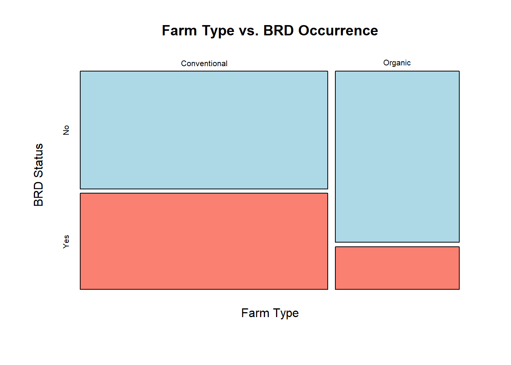

Dates: Monday November 9 · Wednesday November 11 · Friday November 13
14.1 Learning Objectives
By the end of this week, you should be able to:
Explain the difference between tests for numerical data (t-test, ANOVA) and tests for categorical data (chi-square).
Construct a contingency table from categorical data.
Calculate expected cell counts for a chi-square test of independence.
Calculate the chi-square statistic by hand.
Conduct a chi-square test in Excel and R, and interpret the output.
14.2 Background and Conceptual Introduction
All the tests we have covered so far — t-tests and ANOVA — compare the means of numerical variables. But what if your data are categorical? For example:
Do the proportions of males and females differ between two wildlife populations?
Is disease presence (infected vs. healthy) associated with farm management type (organic vs. conventional)?
Is germination success (germinated vs. not) independent of seed treatment (treated vs. untreated)?
For questions like these, we use the chi-square test (\(\chi^2\) test). Instead of comparing means, we compare observed counts to expected counts — the counts we would expect if there were no relationship between the two categorical variables.
Think of it this way: if farm management type has no effect on disease prevalence, then we would expect the same proportion of infected animals on organic farms as on conventional farms. If the observed proportions are very different from this expectation, the chi-square statistic will be large, and we reject the null hypothesis of independence.
TipThink About It 🧠
You survey 100 farms and categorize each by management type (conventional vs. organic) and whether a specific plant disease was observed (present vs. absent). You find disease on 40% of conventional farms but only 20% of organic farms. Is this difference due to a real association, or could it happen by chance? How large does the difference need to be before you are convinced it is real?
14.3 Key Concepts and Definitions
Chi-square test of independence (\(\chi^2\)): Tests whether two categorical variables are associated (not independent) in a population.
Contingency table: A table displaying the frequencies of two categorical variables. Also called a cross-tabulation or “cross-tab.”
Observed counts (\(O\)): The actual counts from your data.
Expected counts (\(E\)): The counts you would expect if the two variables were completely independent:
\[E_{ij} = \frac{(\text{row total}_i) \times (\text{column total}_j)}{\text{grand total } N}\]
A large \(\chi^2\) means observed counts are far from expected counts → evidence against independence.
Degrees of freedom:\(df = (r - 1)(c - 1)\), where \(r\) = number of rows and \(c\) = number of columns.
Assumption: Expected cell counts should all be ≥ 5 (or at least 80% of cells ≥ 5). With very small expected counts, the chi-square approximation breaks down.
14.4 How to Do It by Hand
NoteExample: Cattle Disease and Farm Type
A veterinarian surveys 120 cattle farms and records: (1) farm type (conventional vs. organic) and (2) whether bovine respiratory disease (BRD) was detected in the past year (yes vs. no).
Observed contingency table:
BRD Yes
BRD No
Row Total
Conventional
36
44
80
Organic
8
32
40
Column Total
44
76
120
Step 1: State hypotheses
\(H_0\): Farm type and BRD occurrence are independent.
\(H_a\): Farm type and BRD occurrence are associated.
Conclusion: There is significant evidence (\(\chi^2_1 = 7.18\), \(p = 0.007\)) that BRD occurrence is associated with farm type. Conventional farms had a higher observed disease rate (45%) compared to organic farms (20%).
14.5 How to Do It in Excel
Enter your contingency table including marginal totals.
Calculate expected counts in a separate table using the formula: =(row total × column total) / grand total.
In a third table, calculate \((O-E)^2/E\) for each cell using formulas.
# Chi-square test of independencechisq.test(observed)
Pearson's Chi-squared test with Yates' continuity correction
data: observed
X-squared = 6.1408, df = 1, p-value = 0.01321
# --- Alternatively, from raw data ---farm_type <-c(rep("Conventional", 80), rep("Organic", 40))brd <-c(rep("Yes", 36), rep("No", 44),rep("Yes", 8), rep("No", 32))# Create contingency table from raw datatab <-table(farm_type, brd)print(tab)
brd
farm_type No Yes
Conventional 44 36
Organic 32 8
# Chi-square test on the tablechisq.test(tab)
Pearson's Chi-squared test with Yates' continuity correction
data: tab
X-squared = 6.1408, df = 1, p-value = 0.01321
# --- Visualize with a mosaic plot ---mosaicplot(tab,main ="Farm Type vs. BRD Occurrence",color =c("lightblue", "salmon"),xlab ="Farm Type",ylab ="BRD Status")

14.7 Interpretation and Common Mistakes
WarningCommon Mistake: Expected Counts Too Small
If any expected cell count is less than 5, the \(\chi^2\) approximation may be inaccurate. In R, you will see a warning: “Chi-squared approximation may be incorrect.” Options: (1) combine categories if it makes biological sense, (2) use Fisher’s Exact Test (fisher.test(tab)), which works for small samples.
WarningCommon Mistake: Using Chi-Square for Numerical Data
Chi-square tests categorical data (counts of individuals in categories). Do not use it to test whether the means of a numerical variable differ between groups — use t-tests or ANOVA for that.
WarningCommon Mistake: Chi-Square with n = 1 Per Cell
A 2×2 table with very small counts (e.g., 4 total observations across 4 cells) violates the expected-count assumption badly. Always check your sample size before running a chi-square test.
14.8 Summary
The chi-square test of independence tests whether two categorical variables are associated.
Build a contingency table with observed counts, then calculate expected counts under independence.
The chi-square statistic compares observed and expected counts: \(\chi^2 = \sum (O-E)^2/E\).
Degrees of freedom: \(df = (rows - 1)(columns - 1)\).
Assumption: expected cell counts ≥ 5; use Fisher’s Exact Test if not met.
In R, use chisq.test(table).
14.9 Practice Problems
A wildlife biologist surveys 80 prairie dogs and classifies each by colony type (large vs. small) and plague infection status (infected vs. not). Results: large colony, infected = 18; large colony, not = 22; small colony, infected = 8; small colony, not = 32. (a) Construct the contingency table with row/column totals. (b) Calculate expected counts. (c) Calculate the chi-square statistic. (d) State your conclusion at \(\alpha = 0.05\) (\(\chi^2_{crit} = 3.841\)).
A crop scientist plants 150 soybean plants and classifies them by seed treatment (inoculated vs. control) and nodulation status (nodules present vs. absent). He finds all expected cell counts ≥ 5 and obtains \(\chi^2 = 2.1\) with \(df = 1\). Is nodulation independent of seed treatment (\(\alpha = 0.05\))? Explain.
In a chi-square test of independence, what does it mean for the two variables to be “independent”? Give an agricultural example of two categorical variables that you would expect to be associated, and two that you would expect to be independent.